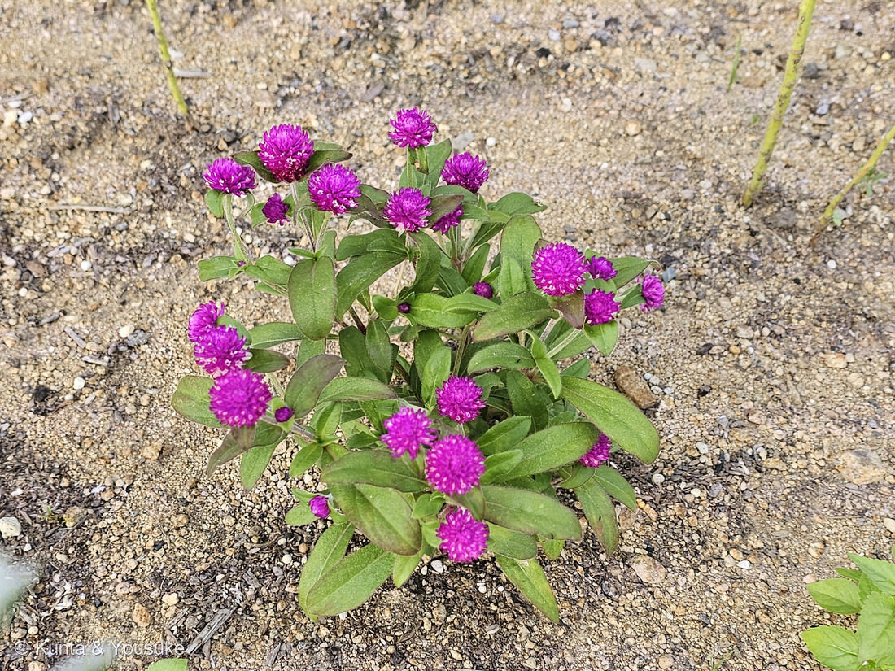

地図を読み込んでいるよ…
🔍 写真も地図も、押しているあいだ拡大して見られるよ（スマホは指を置いてすこし待ってね）。
🌍 の地図＝この子がもともと自生している場所を緑に。熱帯アメリカ〜南アジア。⚠読めた出典で書きぶりに幅があり、「熱帯アメリカから南アジア」とするものと「インドやアメリカからアジアにかけて」とするものがあった。日本では花壇の一年草として広く植えられている。
⭐熱帯アメリカを塗ったよ。⚠ただし、読めた出典で書きぶりが割れていた——「熱帯アメリカから南アジア」とするものと、「インドやアメリカからアジアにかけて」とするもの。⭐どちらも「アメリカ大陸のあたたかいところ」は共通なので、そこを塗って、アジア側は塗らないでおいた。⚠日本では花壇の一年草で、野生化しているわけではないよ。
⚠ 地図は国（日本と中国だけ県・省）までしか塗れないから、ほんとうの分布より広く見えていることがあるよ。地図はだいたいの場所。正確なところは、上の文を見てね。
センニチコウ（千日紅）
Gomphrena globosa L.
別名 · センニチソウ（千日草）／英名 globe amaranth／ 原産 · 熱帯アメリカ〜南アジア／ 見どころ · ⭐ピンクは花びらではなく紙質の苞・本当の花はそのすきま・乾いても色があせない
ヒユ科 · Amaranthaceae（センニチコウ属 Gomphrena・ナデシコ目 Caryophyllales）── 113 ハゲイトウと同じヒユ科
名前と学名の由来 ── 百日紅より、ずっと長く
- ⭐⭐⭐和名「千日紅（センニチコウ）」の由来がすごい。──110 サルスベリの別名「百日紅（ヒャクジツコウ）」よりも、この植物の花期が長いとされることに由来するんだ。⭐「百日」より長いから「千日」。名前で、直接くらべている。
- ⭐そして、それは半分ほんとうで、半分は「乾かしても色があせない」ことを言っている。⭐ドライフラワーにしても、この赤紫は残る。──⭐だから「千日、紅い」。
- ⭐属名 Gomphrena（ゴンフレナ）。種小名 globosa（グロボサ）＝「球形の」。⭐写真のとおり、頭花がまんまるだからだね。
- ⭐英名は globe amaranth（球のアマランス）。⭐113 ハゲイトウと同じヒユ科で、英語でも「アマランス」の名を分けあっている。⚠ただし属はちがう（ハゲイトウは Amaranthus、この子は Gomphrena）。
⭐⭐ 燻太さんの見立てが、ぜんぶ当たった
- ⭐燻太さんが写真を送ってくれたとき、こう書いていた：
「光沢のあるショッキングピンクのおはな。触ってはいないけど、ごわごわしていそう。このピンクも、花びらじゃないのかな。小さなお花のようなものが、隙間から覗いてる。」 - ⭐⭐⭐この4つが、そのまま正解だった。
- ⭐「ごわごわしていそう」→ ⭐苞は「紙質」と書かれている。⭐カサカサとした手ざわりで、⭐だからドライフラワーになる。
- ⭐⭐「このピンクも、花びらじゃないのかな」→ ⭐そのとおり。出典にはこうある：「清廉な紫紅の花序のようにみえるのは、苞である」。⭐花弁は無い。
- ⭐⭐⭐「小さなお花のようなものが、隙間から覗いてる」→ ⭐それが本当の花。実際の花は苞の間に咲いていて、小さくて目立たないんだ。──⭐写真をよく見ると、ピンクのすきまに白い点々が見えるでしょう。あれ。
- ⭐「このピンクも」の「も」がいいなと思った。──⭐この図鑑では、もう何度も「花びらに見えて、じつは葉」に会ってきたからね：048 カラーの仏炎苞、014 ニゲラの萼、133 アジサイの装飾花、062 ハツユキソウの白い葉、164 ヤマボウシの総苞。⭐見なれてくると、先に疑えるようになる。
この植物のこと ── 乾いても、色が残る
- ⭐枝先に、直径2cmほどの球形の頭花をつける。⭐草丈は15cm（矮性品種）〜50cm（高性品種）。⭐花期は7〜10月——⭐この写真は7月27日だから、咲きはじめのころだね。
- ⭐葉は対生で、白い毛におおわれている。⭐茎にも毛があって、節がはっきりしている。
- ⭐⭐いちばんの特徴は「色があせない」こと。⭐カサカサとした苞は、乾いても色を保つ。──⭐だからドライフラワーによく使われるし、仏花としても使われるんだ。
- ⭐⭐⭐そして、ここが面白いところ。──⭐この図鑑には、まったく同じことをしている子が、もう一人いる。⭐125 ローダンセだ。
- ローダンセ＝キク科（ハハコグサ連）。⭐紙質の総苞片を持つ「エバーラスティング（永久花）」の仲間。
- センニチコウ＝ヒユ科。⭐紙質の苞を持つ。
- ⭐⭐科がまったくちがうのに、どちらも「花びらに見える部分を紙のように乾かして、色を長もちさせる」という同じ答えにたどりついている。──⭐これは、この図鑑の「🧬 収れん ── 他人の空似」そのものだね。
同定について
- ⭐センニチコウ（Gomphrena globosa）。決め手＝⭐直径2cmほどの球形の頭花／⭐色づいているのは花弁ではなく紙質の苞／⭐苞のすきまから小さな花がのぞく／葉は対生で白い毛／草丈が低くこんもり。
- ⚠園芸品種なので、品種名までは写真からは決められない。⭐「センニチコウの、赤紫（マゼンタ）の品種」というところまで。
- ⚠原産地の書きぶりが、読めた出典で割れていた——「熱帯アメリカから南アジア」とするものと、「インドやアメリカからアジアにかけて」とするもの。⭐地図は熱帯アメリカを塗って、そのことを但し書きにしてあるよ。
- 📌宿題＝⭐さわって、その「カサカサ」を確かめること。⭐燻太さんは「ごわごわしていそう」と見立てたけれど、まだ触っていない。⭐苞のすきまの本当の花も、ルーペか顕微鏡で見てみたい。
⭐ 港の子、五人目
- ⭐この子も港のあたり。⭐同じ日に見つけた166 スズメガヤのなかまと、ならんで図鑑に入ることになった。
- ⭐港の子は、これで五人：078 モクビャッコウ・087 ヤマモモ・143 シャリンバイ・166 スズメガヤのなかま・そしてこの子。
- ⭐⭐166がコンクリートのすきまの草だったのに対して、この子は花壇に植えられた花。⭐同じ港の、同じ日の、正反対の立場のふたりだね。──⭐でも、どちらも砂っぽい土にいた。
参考：岡山理科大学 植物雑学事典「センニチコウ」（Gomphrena globosa・ヒユ科／⭐「清廉な紫紅の花序のようにみえるのは、苞である」・実際の花は苞の間に咲き花弁は無い／ドライフラワー状になっても色が残り、仏花としても使われる／原産は「インドやアメリカからアジアにかけて」）／草丈15cm（矮性）〜50cm（高性）・花期7〜10月・枝先に直径2cmほどの球状の頭花・花弁状の総苞片は紙質・原産は熱帯アメリカ〜南アジア（⚠これらは検索でひろった園芸系の記述で、上の大学の事典ほどかたい出典ではない）
花言葉
- 日本で
- 色あせぬ愛／不朽。
- 英語圏
- Amaranth (Globe) — Immortality. Unfading love.（不死・色あせぬ愛）Greenaway 1884。日本の出典も英語の花言葉に unfading love・immortality を挙げる＝二語ともまる一致
なぜ、そうなったか：⭐⭐⭐この子は、日本語と英語が、一語のずれもなく重なっている。
「色あせぬ愛」＝ unfading love／「不朽」＝ immortality。──⭐訳したというより、同じものを見た人が、同じことを言ったという感じだね。
⭐そして理由も、はっきりしている：長い花期と、ドライフラワーにしても美しい花色を保つことから来ている、と日本の出典は書いている。⭐つまり、この花言葉は「たとえ話」ではなく、この花が実際にやっていることそのものなんだ。
⭐⭐和名「千日紅」も、まったく同じことを言っている。──百日紅より長い「千日」、そして「紅」。⭐日本の名前も、日本の花言葉も、英語の花言葉も、ぜんぶ「あせない」の一点を指している。⭐ここまでそろう子は、めずらしいと思う。
⚠そして、これはきれいなだけの話ではない。⭐この花が仏花として使われるのは、乾いても色が残るからだよ。──⭐「あせない」は、長く供えていられる、ということでもあるんだ。
参考：Kate Greenaway Language of Flowers(1884)・Project Gutenberg（Amaranth (Globe) — Immortality. Unfading love.／ほかに Everlasting — Never-ceasing remembrance. もある）／花言葉-由来「センニチコウ」（色あせぬ愛・不朽／英 unfading love・immortality／⭐花名は「百日紅（サルスベリ）よりも、この植物の花期が長いとされることに由来」／花言葉は「センニチコウの長い花期やドライフラワーにしても美しい花色を保つことに由来」）